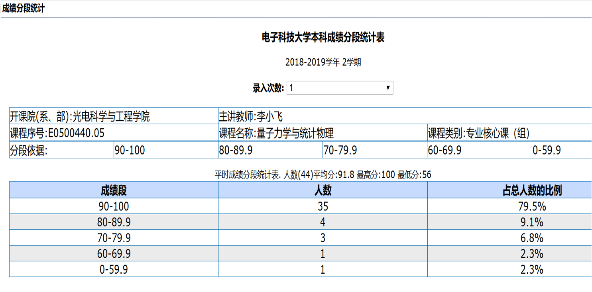
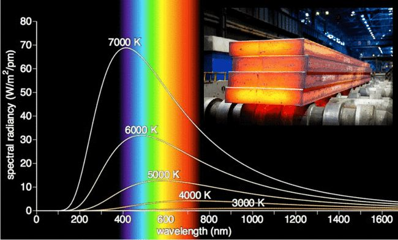
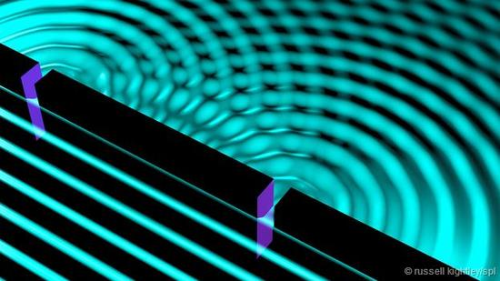
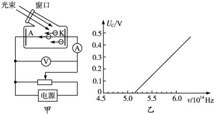
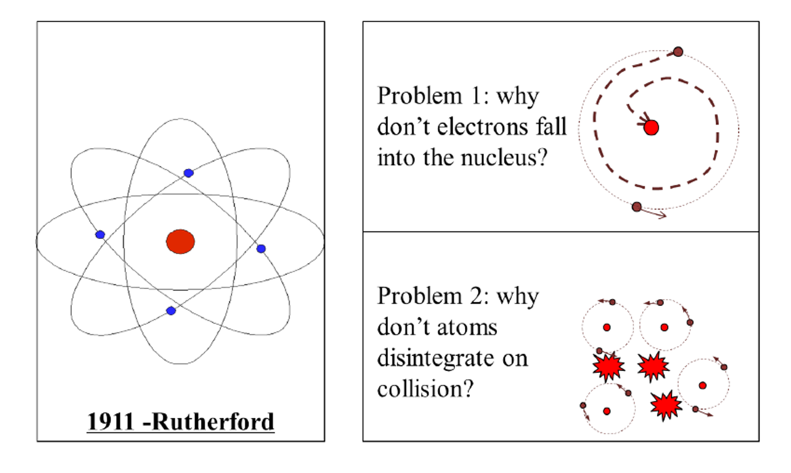
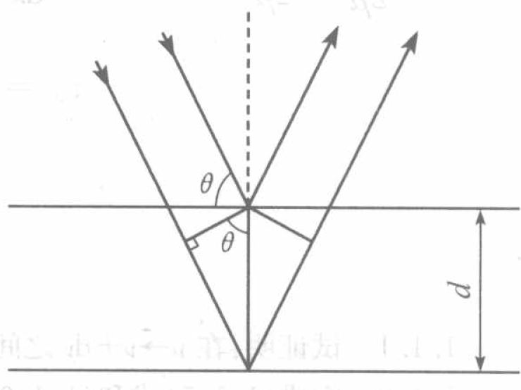
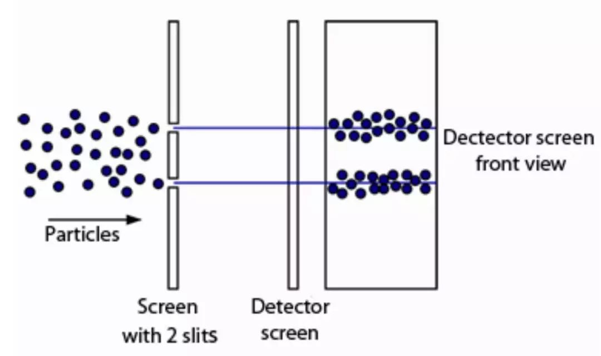
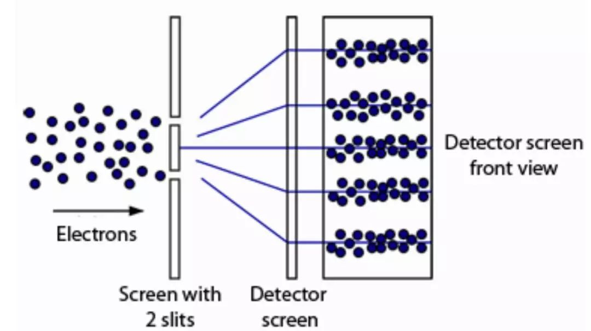

量子力学与统计物理
第一章 绪论
课程简介
课程目标
- Learn the formal theory of Quantum Mechanics
- How physical systems are described in Quantum Mechanics.
- How to solve problems in Quantum Mechanics
分数构成
- Normal results： 20%
- Midterm examination results： 20%
- Final examination results ：60%
教学效果
参考书目：
- 《量子力学》卷I，II， 曾谨言， 科学出版社， 2008
- Principles of quantum mechanics, shankar
- Modern quantum mechanics, shankar
- Lectures on quantum mechanics, weinberg
- Principles of quantum mechanics, Dirac
三条军规
-
Rule 1. Objects are wave-particles and can be in states of superposition
-
Rule 2. Rule 1 holds as long as you don’t measure
-
Rule 3. Measurement gives random results
第一讲 能量子假说
- 经典物理学的伟大成就
- 黑体辐射实验
- 普朗克能量子假说
1、经典物理学伟大成就
 |
 |
 |
建立三大学科群
- 牛顿力学
- 电磁学
- 统计力学
Lord Kelvin said (1900) :
"There is nothing new to be discovered in physics now. All that remains is more and more precise measurements" "
"But, the beauty and clearness … is obscured by two small puzzling clouds "
两朵乌云-1: 迈克尔逊-莫雷实验

-
直接导致相对论的建立
-
改变了人们对时间和空间的基本看法
两朵乌云-2: 黑体辐射实验
-
直接导致量子力学的建立
-
改变了人们对物质的基本看法
现代物理学的二大基石

2. 黑体辐射实验
黑体的定义： 吸收所有电磁辐射的理想物体

实验结果

找到一个数学公式来描述黑体辐射的所有曲线
三大公式

维恩公式
$$ \rho(\nu) d \nu=c_{1} \nu^{3} e^{-c_{2} \nu / T} d \nu $$
- Derived from electromagnetism (1893)
- Described well only in high frequency region
- Nobel Prize in physics（1911)
瑞-琼公式
$$ \rho(\nu, T) d \nu=\frac{8 \pi}{c^{3}} \nu^{2} k T d \nu $$
-
Derived from thermodynamics (1900)
-
Described well only in low frequency region
-
Nobel Prize in physics（1904）
-
Ultraviolet Catastrophe $$ \int_0 ^\infty \frac{8 \pi}{c^{3}} \nu^{2} k T d \nu \to \infty $$
普朗克公式
$$ \rho(\nu, T) d \nu=\frac{8 \pi}{c^{3}} \frac{h \nu^{3} }{e^{h \nu / K T}-1} d \nu $$ where h is Planck constant $$~h=6.6260693(11)\times10^{-34} J\cdot S $$
- Obtained from experimental data via interpolation technique (1900-4)
- Described well in whole frequency region
- Nobel Prize in physics（1918）
问题：
如何从经典物理学导出普朗克公式!
解答：
1900-12-14, 普朗克给出了自己的解决方案
3. 普朗克能量子假说
3. 普朗克能量子假说
-
Black body consists of millions of oscillators
-
The oscillators can only radiate at a discrete amounts of energy $$ E=n\varepsilon $$
-
The unit of the energy (quanta) determined by the oscillator’ frequency $$ \varepsilon=h\nu $$
不连续对平均辐射能的影响
Boltzmann distribution law \[\frac{N_{i}}{N}=\frac{\exp \left(-\frac{E_{i}}{k T}\right)}{\sum_{i} \exp \left(\frac{-E_{i}}{k T}\right)} \]
If energy is continuous，the distribution between $E - E+dE$ : \[ \omega=\frac{e^{-E / k T}}{\int\limits_{0}^{\infty} e^{-E / k T} d E} \]
The average energy \[\begin{aligned} < E > & = \int\limits_{0}^{\infty} E \frac{e^{-E / k T}}{\int\limits_{0}^{\infty} e^{-E / k T} d E} d E \\ \end{aligned} \]
\[\hspace{8em}\begin{aligned} & = -kT (E e ^{-E / k T} \vert_{0}^{\infty}- \int\limits_{0}^{\infty} e^{-E / k T} d E) \\ & = \color{red}{kT} \end{aligned} \]
If energy is discrete，the distribution : \[ \frac{e^{-E / k T}}{\int\limits_{0}^{\infty} e^{-E / k T} d E} \]
\[ \to \frac{e^{-E / k T}}{\sum\limits_{0}^{\infty} e^{-E / k T}} \]
\[ \to \frac{e^{-nh\nu / k T}}{\sum\limits_{0}^{\infty} e^{-nhv / k T}} \]
The average energy is \[\begin{aligned} < E > & = \sum\limits_{0}^{\infty} nh\nu\frac{e^{-nh\nu / k T}}{\sum\limits_{0}^{\infty} e^{-nh\nu / k T}} \\ \end{aligned} \]
\[\hspace{2em}\begin{aligned} & = -h\nu \frac{d}{dx} \frac{n e^{-nx}}{\sum\limits_{0}^{\infty} e^{-nx}} \\ & = \color{red}{\frac{h\nu}{e^{h\nu/kT}-1}} \end{aligned} \]
Difference from continuous to discrete \[ \text{(Continuous)} \quad k T \rightarrow \frac{h \nu}{e^{ h \nu / k T}-1} \quad \text{(Discrete)} \]
对瑞-金公式的影响
Replacing the $kT$ in Rayleigh-Jeans \begin{equation*} \rho(\nu, T) d \nu=\frac{8 \pi}{c^{3}} \nu^{2} k T d \nu \end{equation*} by $\dfrac{h \nu}{e^{ h \nu / k T}-1}$
\begin{equation*} \rho(\nu, T) d \nu=\frac{8 \pi}{c^{3}} \frac{h \nu^{3} }{e^{h \nu / K T}-1} d \nu \end{equation*}
It is exactly the Planck’s formula
讨 论
-
通过普朗克，你学到了什么?
-
普朗克黑体辐射公式和能量量子化观念哪个影响会更大？
Revolutionary Significance
Revolutionary Significance
-
Broke through the constraints of classical physics
-
Opened the door of quantum mechanics
The End
In 1927, Dirac got the Planck’s formula from Quantum Mechanism.
-
实际上，除了普朗克，还有德拜，艾伦菲斯特，劳厄，洛伦兹, 庞加莱，泡利，玻色，爱因斯坦等人从多角度推导过普朗克公式
-
每一次推导都给物理学带来了新的知识
A & Q
作业
- 试述普朗克能量子假说的主要内容
- 由普朗克公式导出维恩位移定律
- 由普朗克公式导出维恩公式和瑞利—金斯公式
第二讲 波粒二象性
-
光的波粒二象性
-
德布罗意物质波假说
1. 光的波粒二象性
-
光是粒子还是波？
-
是一个困扰人类2000多年的问题
波与粒子的不可调和性
| 粒子性 | 波动性 |
|---|---|
| 确定的位置、能量、动量 | 确定的波长、振幅、相位 |
| 两个粒子不能同时占据同一位置 | 可以同时出现在同一位置 |
| 同一粒子也不能同时占据多个位置 | 可以同时占据多个位置 |
| 存在碰撞现象 | 衍射、干涉，无碰撞 |
光的波动说
|  |
光是一定波长范围内的电磁波

光的波动说面临的困难
- 黑体辐射
- 光电效应
- 康普顿效应
- 氢原子光谱
光电效应
光电效应的定义： 光照射到金属上，引起其电性质发生变化的现象称为光电效应。(光电子发射, 光电导效应和光生伏特效应)
实验发现： 
瞬时性. 临界频率. 光电子能量由光的频率决定
理论解释： 1905年, 爱因斯坦推导普朗克公式$\cdots$
- Plank’s Law was consistent with experment but not with existing theory
- Rayleigh-Jeans Law was consistent with existing theory but not with experiment
- For treating Ultraviolet Catastrophe, he proposed the light quantum hypothesis
- Using light quantum hypothesis, he explained the Photoelectric effect
光量子假说
- Light likes particles with unit energy (quanta). $$ E=h\nu $$
- The energy of n light quantum is $$ n h \nu $$
- The momentum of light quantum is (1918) $$ p=\frac{E}{c}=\frac{h\nu}{c}=\frac{h}{\lambda} $$
光电效应公式
$$\frac{1}{2}m_eV_0^2=h\nu-W $$
基于这个公式，爱因斯坦成功解释了实验
解释实验
-
瞬时性：光是粒子，能量被电子瞬时吸收
-
临界频率：
$$\nu_0=\frac{W}{h} $$
- 光电子能量与光的频率决定:
$$E_k=h\nu-W $$
- Nobel Prize in physics（1921）
测定普朗克常数
\begin{aligned} \frac{1}{2}m_eV_0^2 & =h\nu-W \\ y & =kx-b \end{aligned}
- 1916年，密立根测定普朗克常数
- Nobel Prize in physics（1923）
Revolutionary Significance
Revolutionary Significance
-
揭示能量子的本质：在于光本身是量子化的，具有粒子性
-
揭示光的本质：光既具波动性又具粒子性。
普朗克:
在近代物理学结出硕果的那些重大问题中，很难找到一个问题是爱因斯坦没有做出过重要贡献的 $\dots$
在他的各种推测中，他有时可能也曾经没有中标的, $\dots$
例如他的光量子假设，就有点迷失了方向$\dots$
康普顿效应
康普顿效应的定义： 光通过实物时，散射光中存在不同于原波长的成份，且其波长的增量随散射角而变化，这种现象称为康普顿效应（Compton Effect）
波长-角度关系
$$\lambda_{out}-\lambda_{in}=\lambda_e(1-\cos \theta)$$
推导：
电子能量 $$ E^2 =m_e c^2 = p^2 c^2 +m_0 ^2 c^4 $$
光子能量 $$ E =pc $$
能量守恒
\begin{aligned} E_i + m_0 c^2 &= E_o + m_ec^2 \\ (E_i -E_o + m_0 c^2)^2 &= E_e ^2\\ (p_i c-p_o c + m_0 c^2) ^2 &= p_e ^2 c^2 +m_0 ^2 c^4 \\ (p_i-p_o)^2 +2 m_0 (p_i c-p_o c) &= p_e ^2 \end{aligned}
动量守恒
\begin{aligned} \vec{p}_i -\vec{p}_o &= \vec{p}_e \\ (\vec{p}_i -\vec{p}_o)\cdot (\vec{p}_i -\vec{p}_o) &= \vec{p}_e\cdot \vec{p}_e \\ p_i ^2 + p_o ^2 -2p_i p_o \cos \theta &= p_e ^2 \\ p_i ^2 + p_o ^2 -2p_i p_o \cos \theta &= (p_i-p_o)^2 +2 m_0 (p_i c-p_o c) \\ \frac{1}{p_o} -\frac{1}{p_i} &= \frac{1}{m_0 c} (1-\cos \theta) \\ \lambda_o -\lambda_i &= \frac{h}{m_0 c} (1-\cos \theta) \\ \lambda_{out}-\lambda_{in} &=\lambda_e(1-\cos \theta) \end{aligned}
结束！
康普顿效应表明：
-
光与电子发生了“弹性碰撞”
-
波长为$\lambda$ 的光子具有确定动量 $$p=\frac{h}{\lambda}$$
-
动量守衡定律适用了量子体系
Nobel Prize in physics（1927）
氢原子光谱
经验公式：$\dfrac{1}{\lambda}=R_H c (\dfrac{1}{m^2} -\dfrac{1}{n^2})$
Rutherford 原子模型与氢原子光谱不符
玻尔的氢原子模型
玻尔的氢原子模型
- Stationary state: Electrons move around the nucleus only in certain allowed circular orbits with fixed momentum $$ L=n \frac{h}{2\pi}= n \hbar,\qquad (\oint p_i dq_i = n_i h)$$
玻尔的氢原子模型
-
Stationary state: Electrons move around the nucleus only in certain allowed circular orbits with fixed momentum $$ L=n \frac{h}{2\pi}= n \hbar,\qquad (\oint p_i dq_i = n_i h)$$
-
Quantum transition: Electron can jump between stationary state orbits when absorbed or emitted a photon with energy $$h\nu=E_n -E_m $$
定态轨道半径
\[\begin{equation*} \begin{split} m\frac{v^2}{r}&=\frac{1}{4\pi\epsilon_0} \frac{e^2}{r^2} \\ L&=mvr =n\hbar \\ r_n&= n^2 (\frac{\epsilon_0 h^2}{m\pi e^2}) =n^2 r_1 \end{split} \end{equation*} \]定态能量
\[\begin{equation*} \begin{split} E_n &= T + U \\ &= \frac{1}{2}mv^2- \frac{1}{4\pi\epsilon_0} \frac{e^2}{r_n ^2} \\ &= \frac{1}{n^2} (-\frac{m e^4}{8 \epsilon_0 ^2 h^2}) \\ &= \frac{E_1}{n^2} \end{split} \end{equation*} \]光谱公式 \begin{aligned} \nu&=\frac{E_n -E_m}{h} \\ &= \frac{m e^4}{4\pi \hbar ^3} [\frac{1}{m^2} -\frac{1}{n^2}] \end{aligned}
Rydberg 常数 \begin{equation*} \begin{split} R_{theo}&= \frac{m e^4}{4\pi \hbar ^3 c} \\ & =1.0973731\times 10^7 m^{-1} \\ R_{exp}&=1.0974\times10^7 m^{-1} \end{split} \end{equation*}
- Nobel Prize in physics（1922）

-
1905年爱因斯坦提出的光子概念，不受名人的重视，普朗克说他“迷失了方向”
-
1913年，28岁的玻尔把光子概念作用于卢瑟福原子模型，成功破解氢原子光谱问题
光的波粒二象性
光的波粒二象性
\begin{cases} \text{Light behaves like waves }\\ \text{$\qquad$ Interference} \\ \text{$\qquad$ Diffraction} \end{cases}
光的波粒二象性
\begin{cases} \text{Light behaves like waves }\\ \text{$\qquad$ Interference} \\ \text{$\qquad$ Diffraction} \end{cases}
\begin{cases} \text{Light behaves like particles}\\ \text{$\qquad$ Photoelectric effect} \\ \text{$\qquad$ Compton effect} \\ \text{$\qquad$ Atomic spectrum } \end{cases}
- Light behaving like waves and particles is called wave-particle duality of light
学术讨论
How can light be both particle and wave ?
2. 德布罗意物质波假说
hypothesis of matter wave
-
In 1923, de Broglie states that if light which is classically a wave could behave as a particle, then classical particles could also behave as quantum waves.
-
The relationship between the wave property and particle property should be $$\lambda=\frac{h}{p}, \qquad \nu =\frac{E}{h}$$
氢原子电子的德布罗意波长
\begin{aligned} L&=n\hbar \\ \vec r \cdot \vec p & = n\frac{h}{2 \pi} \\ 2\pi r&= n\frac{h}{p}\\ 2\pi r&= n\lambda \to \color{red} {l=n\lambda} \end{aligned}
电子衍射实验 （Davisson and Germer，1927）
基于布拉格方程 $ 2d\sin \theta=n\lambda $
求得实验中电子波长约为 0.16x $nm$, 正好与理论上的电子的德布罗意波长一样!
- Nobel Prize in physics（1937)
de Broglie
-
Extended the wave-particle duality from light to particles
-
discovered the wave nature of electrons.
-
Nobel Prize in physics（1929)
单电子双缝干涉实验
 
Electron interference patterns (Jonsson, 1961)
Conclusion
- Wave-particle duality is the inherent attribute of matter
Big problem
- How to interpret the world where waves are particles and particles are waves
A & Q
作业
-
计算氢原子第一玻尔半径上电子的德布罗意波长
-
计算一个静态电子经100 V电势差加速后的德布罗意波长
-
He-Ne 激光器发射波长为633 nm的激光。若该激光器功率为1 mW，求每秒钟发射多少光子
-
试述什么是波粒二象性，从波粒二象性角度说明经典物理学当时所面临的困难